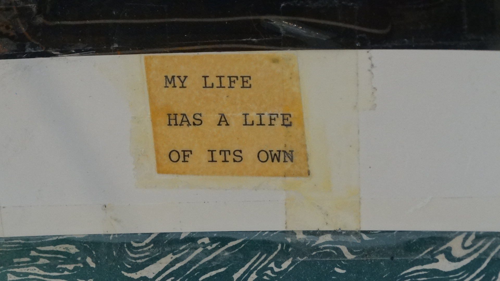

Jonah
Bernstein-
Schalet
My current work is focused on carbon dioxide removal, where I am primarily interested in answering questions related to the epistemic certainty of interpretations we can gather from empirical data. On a broader sense, I think about what should "count" as CDR and how we can extract more societal value from deployments of CDR technologies. Ultimately, I think the main question facing the CDR industry is whether we can identify scalable solutions at the lowest possible cost to society, ideally, solutions that have economic drivers that fully subsidize themselves and are not reliant on a global carbon market. I'm exploring these questions and more at Yale University.
In the past, I worked for Mati Carbon, an enhanced rock weathering practitioner in the global south, and winner of the $50M XPRIZE. Before that, I graduated from Brown with my Bachelor's degree in Geology-Biology, where I studied the influence of wildfires on biogeochemical cycles in Oregon, USA.
↓
Strata
Things I've done
Notes

rocks, dissolving
Sometimes, noise can deceive us matisandbox.com →
rice, burning
2019·01
MODIS fire pixel-days since Jan 2019
Sulfur
